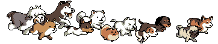

Exploring Dogs and NYC Boroughs in Three Charts
An analysis of different attributes of dogs living in the boroughs of NYC.
Popularity of Breeds in Each Borough
Count of unique dog breeds in Brooklyn, Manhattan, Queens, Staten Island, and the Bronx. The larger the circle, the more instances of that breed in its respective borough. Hover over the circles to see the breed and their count!
Text explaining a little bit about the bubble chart
Age Distribution of Dogs in Each Borough
Distribution of the ages of dogs (as of 2015) in NYC from 1 year old to 18 years old!